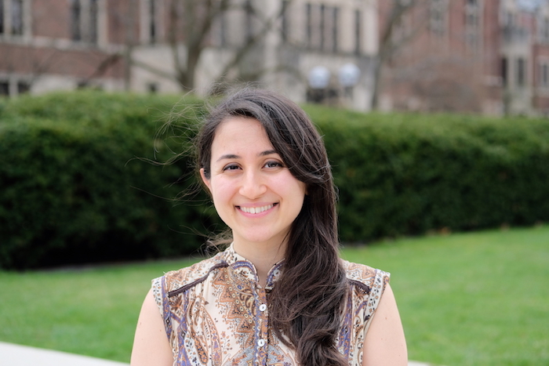

I am an Assistant Professor in the Electrical and Computer Engineering department and The Design Lab at the University of California, San Diego.I lead the MINDS lab, where we study decision making and learning in networks (including network games, multi-agent reinforcement learning, and learning for optimization in networks/graphs), and the ethics and economics of AI (including data biases, algorithmic fairness, and strategic human-in-the-loop). Our research has been generously supported by the National Science Foundation, Amazon, and Cisco.